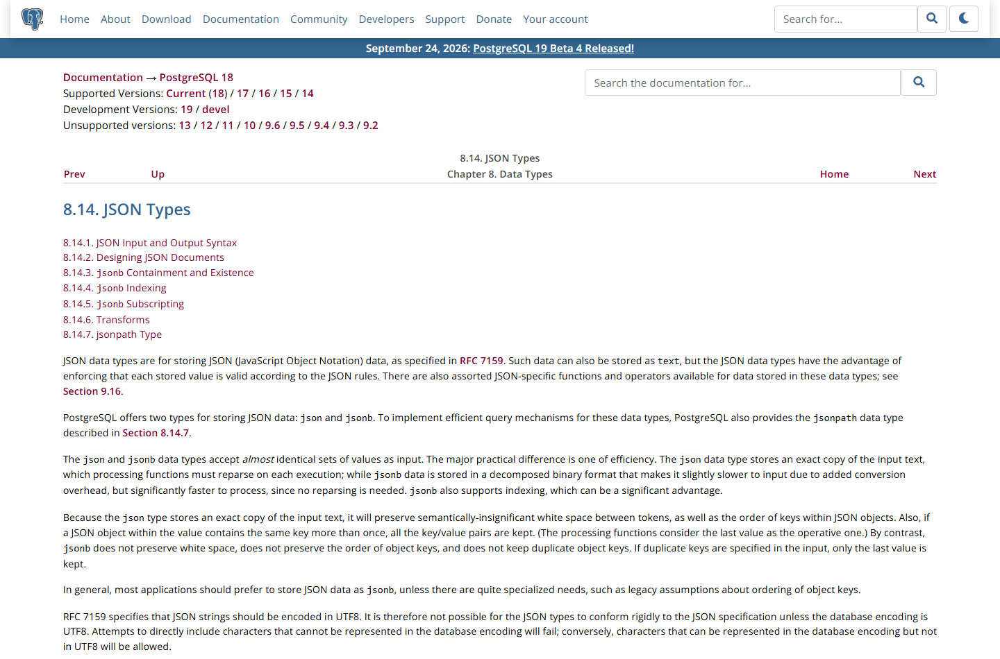
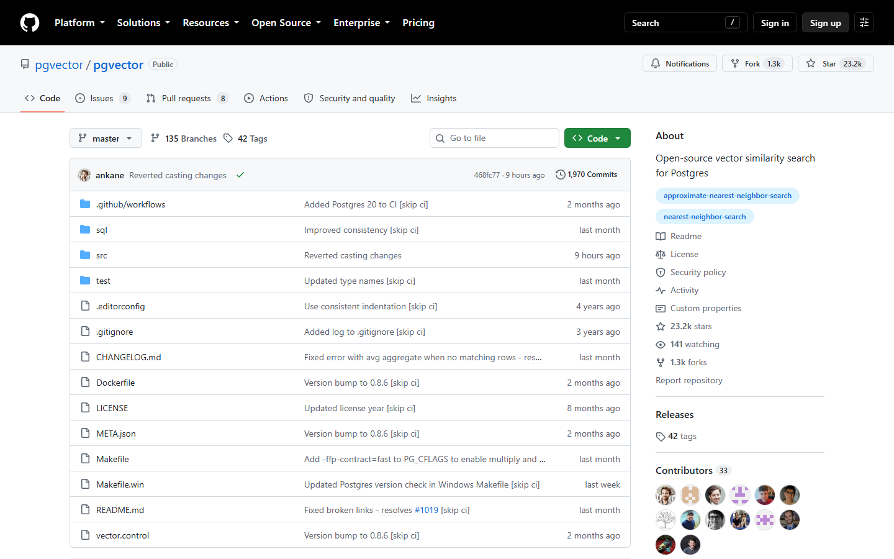
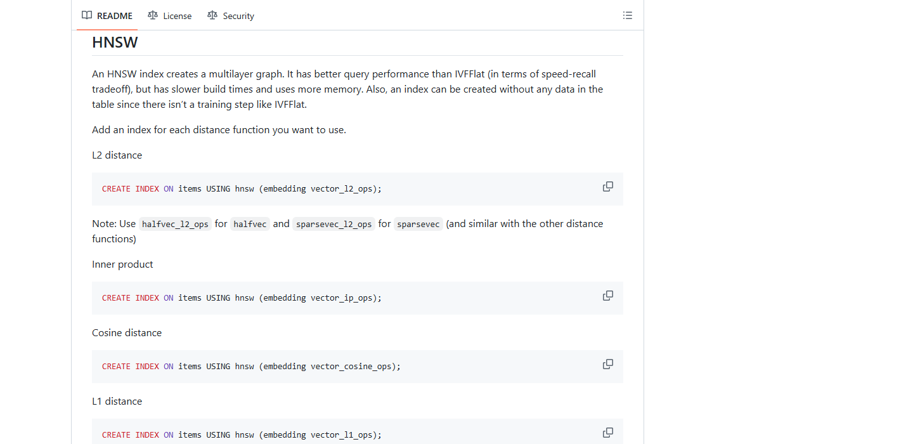

OSS PROJECT INTRO · POSTGRESQL 系列第 4 期：实战场景
第 1 期说过"数据不动、能力挂载",这期把它落成可运行的 SQL。场景是一个典型的电商商品中心:商品主表要标准关系结构,商品详情是灵活多变的 JSON 文档,商品描述还要向量化做"语义找货"。拼图式架构要主库 + 搜索引擎 + 向量库三件套;PG 的答案是 jsonb + GIN 索引存文档、pgvector + HNSW 索引做相似度,三形态同库同事务。基于 v18.6(官方 Latest,2026-08-13 发布)与 pgvector 0.8.6,全部命令可照抄运行。
商品中心是检验"一库多能"的最好考场,因为它天然长着三副面孔:关系形态——SKU、类目、价格、库存,结构稳定、强约束、要事务;文档形态——商品详情(品牌、规格、卖点、适配清单)因品类而异,手机有颜色和内存,笔记本有屏幕和接口,硬塞进列里要么天天改表、要么一堆 NULL;向量形态——把商品描述喂给嵌入模型变成向量,支撑"打字懒的无线鼠标"这类语义搜索。三副面孔,三种存储天性。
拼图式架构的解法是三件套:主库存表、搜索引擎存文档、向量库存向量,再加两条同步链路把它们粘起来——同步延迟、一致性对账、三套运维,件件都是长期利息(第 1 期的痛点在这里具象化)。PG 的解法是:三形态进同一张库,甚至同一张表,用 jsonb 承接文档、用 pgvector 承接向量,一次事务写全,一个备份全覆盖,一条 SQL 混合查。
看懂这张图,本期的骨架就立住了:关系列守约束,文档列管灵活,向量列管语义;GIN 与 HNSW 两条索引各管各的查询入口。下面三节,每种形态一段可运行的最小实现。
CREATE TABLE products (
id bigserial PRIMARY KEY,
sku text UNIQUE NOT NULL,
category text NOT NULL,
price numeric(10,2) CHECK (price >= 0),
stock int DEFAULT 0,
created_at timestamptz DEFAULT now()
);没有任何惊喜,这正是重点:PG 的关系能力就是"标准 SQL 完全体"——主键、唯一、检查约束、外键照常用,事务语义比多数 MySQL 版本更严(DDL 可回滚)。下单扣库存、改价、盘点,这些主路逻辑写在这里,与任何经典关系库无异。后面两形态都是往这张表上"加列",而不是另起炉灶——加法思维,是单库方案的地基。
官方文档对两种 JSON 类型的界定很清楚:json 存输入原文,每次处理都要重新解析;jsonb 存分解后的二进制格式,写入略慢、处理显著更快,而且支持索引——所以业务文档列默认选 jsonb。

ALTER TABLE products ADD COLUMN attrs jsonb;
UPDATE products SET attrs =
'{"brand":"尼客","color":"黑色","tags":["无线","轻量"]}'
WHERE sku = 'NK-M01';
-- 包含查询:attrs 中含 brand=尼客 的行
SELECT sku, attrs->>'color' AS color
FROM products
WHERE attrs @> '{"brand":"尼客"}';
-- 给文档列加 GIN 索引,包含查询从全表过滤变索引命中
CREATE INDEX idx_products_attrs ON products USING gin (attrs);三个动作记住文档形态:加列、写文档、建 GIN。@> 是包含查询符——右边那个 JSON 文档的全部键值都出现在左边,才算命中;GIN 索引把"逐行解析再过滤"变成"倒排直接定位",商品规格筛选这类查询从毫秒级全表变成索引级。键名随手加、品类差异随便长,表结构一动不动。
来源注记——jsonb 与 GIN 见官方文档 8.14 JSON Types 与 jsonb Indexing 小节(postgresql.org/docs/18/datatype-json.html,2026-09-30 核对):jsonb 二进制存储支持索引;GIN 默认 jsonb_ops,另有仅服务包含查询的 jsonb_path_ops。
pgvector 自述只一句话:"Open-source vector similarity search for Postgres"——把向量和你的其他数据存在一起。支持 PostgreSQL 13 及以上,装法是 CREATE EXTENSION(数据库里执行)或镜像方式部署;当前版本 0.8.6,Star 23.2k。

CREATE EXTENSION vector;
ALTER TABLE products ADD COLUMN embedding vector(4);
UPDATE products SET embedding = '[0.1, 0.7, 0.2, 0.9]'
WHERE sku = 'NK-M01';
-- 生产维度随嵌入模型:768 / 1536 等,vector 类型可存 16000 维
-- 语义找货:余弦距离最近的前 5 个商品
SELECT sku, embedding <=> '[0.1, 0.7, 0.2, 0.9]' AS distance
FROM products
ORDER BY embedding <=> '[0.1, 0.7, 0.2, 0.9]'
LIMIT 5;描述文本在应用侧经嵌入模型转成向量后写入 embedding 列;查询时把用户意图同样向量化,按距离运算符排序取 Top-5。距离算子按需选:<-> 欧氏距离、<=> 余弦距离、<#> 负内积——文本语义检索通常用余弦。注意这条查询里没有任何同步、没有任何跨库:商品行和它的向量在同一行里。
向量一多,精确遍历就是全表扫描——得靠近似最近邻(ANN)索引。pgvector 内置两种,官方 README 给的取舍描述非常直白:
| 维度 | HNSW(多层图) | IVFFlat(倒排分桶) |
|---|---|---|
| 查询性能 | 更好(速度-召回权衡更优) | 较低 |
| 构建时间/内存 | 更慢、更占内存 | 更快、更省 |
| 空表建索引 | 可以(无训练步骤) | 不行(需要先有数据训练分桶) |
| 一句话选法 | 读多、质量敏感的默认款 | 数据巨大、写入节奏可控时用 |

CREATE INDEX ON products USING hnsw (embedding vector_cosine_ops);
SET hnsw.ef_search = 100; -- 候选列表宽度,默认 40:调大换召回率两条实操细节:一,索引必须按距离函数选 operator class(余弦查询就建 vector_cosine_ops);二,ef_search 是"精度旋钮",调大召回率升、速度降,压测找到业务可接受的平衡点。维度上限也记一笔:vector 类型可存 16000 维,但索引只支持到 2000 维——嵌入模型选型时就把维度规划进去。
来源注记——pgvector README(pgvector/pgvector,2026-09-30 核对):HNSW 与 IVFFlat 取舍、hnsw.ef_search 默认 40;vector 上限 16000 维、索引 2000 维(halfvec 索引可达 4000 维)。
| 维度 | PG 一库式(jsonb + pgvector) | 拼图式(主库 + ES + 向量库) |
|---|---|---|
| 一致性 | 同库同事务,写全或全无 | 异步同步,延迟窗口 + 对账任务 |
| 运维面 | 一套部署、监控、备份 | 三套组件版本、容量、故障域 |
| 混合查询 | 一条 SQL:条件 + 文档 + 排序 | 应用层多次查询再聚合 |
| 天花板 | 超大向量规模与极端 QPS 受限 | 各组件可独立无限横向扩 |
| 团队要求 | 吃透 PG 调优(vacuum/索引) | 吃透三个产品的运维 |
结论口径与第 1 期一致,但这期可以给得更具体:中小规模(百万级到千万级商品)、检索形态以"结构条件 + 文档过滤 + 语义相似"混合为主,一库式的总成本显著更低;当向量规模到了数亿级、或检索需要多路召回的复杂策略时,专用向量库的架构优势才开始盖过拼图的同步成本。先一库,后拆分——拆分应该是规模化成功的勋章,而不是起步的负担。
每题点击选项立即反馈 · 共 3 题
1. 业务文档列选 jsonb 而不是 json,官方给出的核心理由是?
2. 文本语义检索按余弦距离建 HNSW 索引,正确的写法是?
3. 什么信号出现,才值得把向量能力拆到专用向量库?
变强的部分:模式灵活——品类差异不再逼你加列或堆 NULL,新属性上线不改表;半结构化查询——GIN + 包含查询让"按任意规格筛"变成索引级操作;文档完整性——一个商品的详情天然是一个文档,读写都以整体为单位,不存在"十几个稀疏列"的语义破碎。变弱的部分:列级约束没了——jsonb 内部字段没有 CHECK、没有 NOT NULL、没有外键,数据质量从"库强制"变成"应用自觉";统计与类型弱化——对内部字段做范围统计、类型精确匹配都比关系列别扭,优化器的选择面也窄;更新粒度变粗——改一个字段要重写整个文档(有 jsonb_set 可做局部改,但语义与锁行为和列更新不同);行变宽——大文档影响缓冲池效率与 TOAST 行为。自查清单五问:一,这些字段是否需要数据库级唯一/外键约束?需要则留关系列;二,是否要按它们做高频范围查询与聚合?是则留关系列;三,写入路径是否高频改单个字段?是则谨慎;四,文档大小是否可控(几百字节到几 KB)?超大的先压缩或外置;五,团队是否理解 GIN 的写放大与维护成本?一句话:约束走关系列,灵活走 jsonb,别把数据库的纪律当成负担扔掉。
三条检索路径,三套索引,一份数据。第一路,规格与属性筛选:attrs jsonb 建 GIN(默认 jsonb_ops 支持存在符与包含查询;若只有包含查询,可换 jsonb_path_ops,索引更小更快但能力面窄)。代价:GIN 写放大明显,商品高频上下架时写入吞吐下降,要监控 GIN 的 pending list 与清理。第二路,标题模糊搜索:轻量方案是 pg_trgm 扩展给 title 建 GIN trgm 索引,LIKE '%关键词%' 也能走索引;重一点就上全文检索(tsvector 列 + GIN)。代价:trgm 索引体积随词长增长,中文要配合分词或按字切分,召回质量需要用真实查询语料调。第三路,语义找货:embedding 列建 HNSW(vector_cosine_ops),ef_search 从默认 40 起按召回率压测上调。代价:HNSW 构建慢、内存占用高,大批量导入后要预留重建窗口,空表可先建是它的温柔。组合查询的写法:一条 SQL 里 AND 三路条件,规划器会选 BitmapAnd 组合各索引,排序用距离或混合分。代价:多谓词的选择率估计变难,统计信息要保鲜(定时 ANALYZE),必要时用 CTE 固化中间结果。架构层面的清醒:三路都压一张表,换来的是零同步;代价是这张表的写入路径与索引维护成为全系统最需要压测的地方——上线前用生产级数据量把三条索引的写入开销一起量。
带走这五句话:
<=> 余弦距离 Top-5 语义找货;HNSW 索引按距离函数配 operator class,ef_search 是精度旋钮(默认 40);下期预告(系列收官):第 5 期《架构与源码导读》——src/backend 目录地图、一条查询的执行器路径、heap 存储的 MVCC 实现,以及给 Java 工程师的 C 语言读码路线,把前四期的架构图落到代码上。
Primary source:JSON Types(官方文档)、pgvector 官方仓库与 README——本期类型界定、索引取舍、参数默认值均出自两处原文(jsonb/官方文档 v18.6,pgvector 0.8.6,均 2026-09-30 核对)。